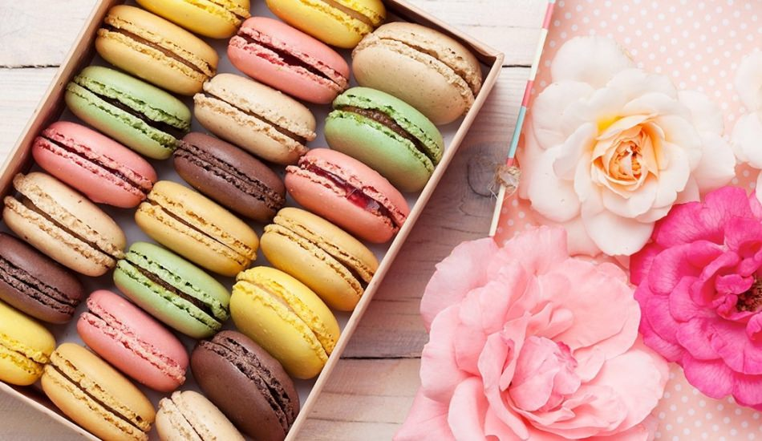

How to Make Macaron
- Butter and flour three 6- inch pans. I use cake strips on my pans for more even baking as well. Preheat oven to 340F. Sift the dry ingredients together in a large bowl.
- Beat the wet ingredients together in a medium bowl.
- In a standing mixture fitted with a paddle attachment, beat butter until light and fluffy.
- Beat the dry ingredients into the butter until well incorporated, scrape the bowl at least once. Add the wet to the butter mixture and mix until just combined.
- Fold in the crushed Oreos at the very end and mix until just combined. Divide the mixture evenly into the cake pans. Bake at 340 for about 25-30 minutes or until the centers are springy to the touch.
- Beat the butter until light and fluffy. Add the confectioners’ sugar and cream and mix. Reserve about a cup of the buttercream for the white dollops. Which will be piped with an 869 tip.
- Mix in the crushed Oreos into the large batch of buttercream. Melt chocolate and cream together on low heat. Whisk together and set aside. You might need to add more or less cream to achieve the desired consistency.
- Oreo buttercream goes between each layer, you can pipe it on or apply with a spatula.
- Swirl chocolate between each layer. Don’t go overboard with the ganache as it will overpower the other flavors.
French Macaron
Melissa Doyle
Blogger
I am a wife, a mother, a grandma, and a good cook at home. I love making french macaron and love make my family happy.
The family is the most important thing for us. So This is a very delicious cake that you can make easily for yourfamilyI am happy to share with you :)
Share this :